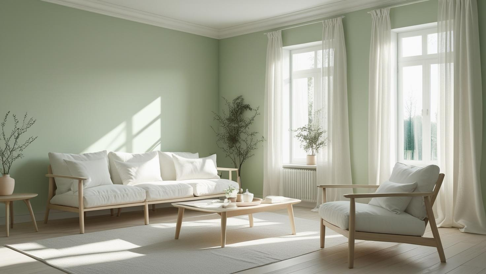
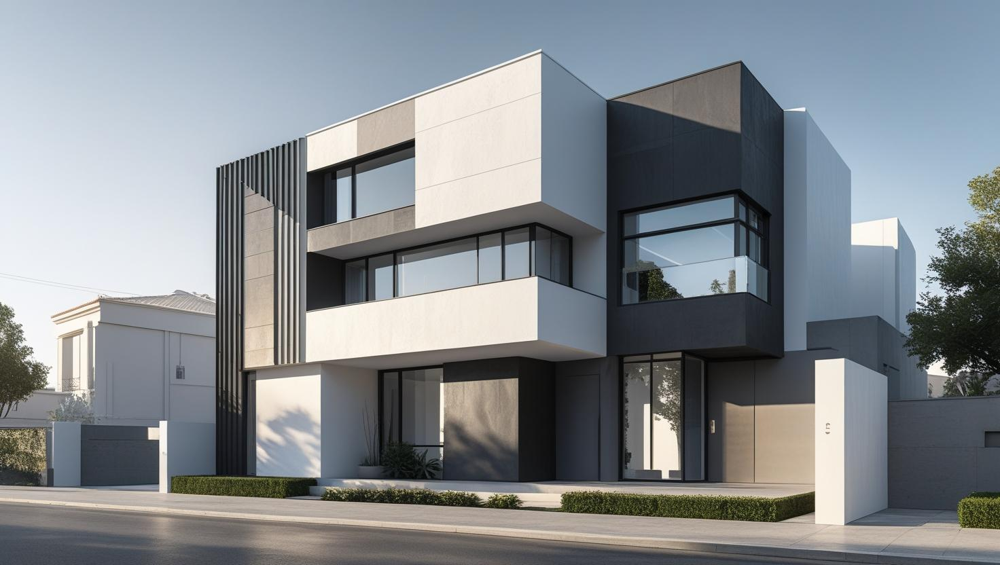
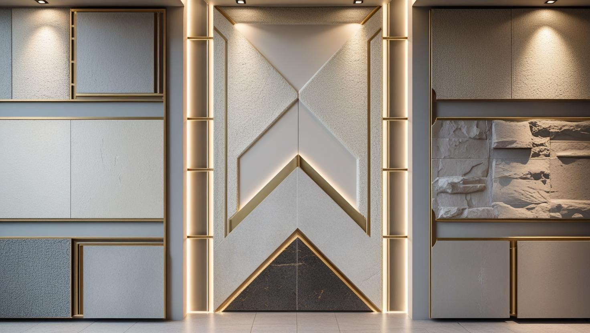

20 yıllık tecrübemizle iç ve dış cephe boya hizmetleri. Esenyurt'un her bölgesinde profesyonel boyama çözümleri sunuyoruz.

Esenyurt içinde iç mekan boyama talepleri genellikle site daireleri, kiralık konutlar ve yeni taşınılan geniş daireler için gelir. Esenyurt Merkez, Akçaburgaz, Saadetdere, Mehterçeşme çevresinde boya öncesi macun, astar ve eşya koruma ihtiyacı yerinde kontrol edilir.

Esenyurt dış cephe işlerinde bina yüksekliği, cephe yıpranması ve çevre koşulları uygulama planını belirler. Esenyurt Merkez ve Akçaburgaz hattındaki yapılarda iskele, boya sistemi ve hava durumu birlikte değerlendirilir.

Esenyurt dekoratif boya uygulamalarında salon, antre veya ofis odak duvarları için renk ve doku seçimi yapılır. Taşınma öncesi boya, kiracı çıkışı yenileme ve site içi hızlı teslim sırasında mevcut ışık ve mobilya rengine göre seçenek sunulur.
| Hizmet Türü | Metrekare Fiyatı | Ortalama Süre (100m²) | Garanti |
|---|---|---|---|
| İç Cephe Boyama | 100-200 TL | 2-3 Gün | Uygulama kapsamına göre |
| Dış Cephe Boyama | 150-280 TL | 3-5 Gün | Uygulama kapsamına göre |
| Dekoratif Boyama | 250-500 TL | 4-7 Gün | Uygulama kapsamına göre |
| Ofis Boyama | 120-220 TL | 2-4 Gün | Uygulama kapsamına göre |
Metrekare fiyatları yaklaşık ön değerlendirme aralığıdır. Uygulanacak ölçüm yöntemi, boyanacak alanın kapsamı, yüzey durumu, tamirat ihtiyacı, kat sayısı ve malzeme seçimi keşif sırasında netleştirilir.
Dış cephe boya fiyatları uygulama alanı için yaklaşık 150–280 TL/m² aralığındadır. Kesin hesaplama yöntemi ve teklif; yüzey durumu, bina yüksekliği, erişim veya iskele ihtiyacı, tamirat kapsamı, boya sistemi ve uygulanacak kat sayısına göre keşif sırasında netleştirilir.
Uygulama kapsamına göre işçilik garantisi sağlanır. Garanti kapsamı ve istisnaları teklif veya iş sözleşmesinde belirtilir.
Esenyurt, İstanbul'un en kalabalık ilçelerinden biridir. Mehmet Akif, Pınar, 100. Yıl ve Cumhuriyet mahallelerindeki yoğun apartman ve toplu konut stoku; kiracı geçişlerinde, yenileme dönemlerinde ve yeni ev alımlarında sürekli bir boya badana talebi yaratıyor. Esenyurt boyacı ustası olarak hem hızlı teslimat gerektiren kiracı teslimlerinden hem de mülk sahibi yenilemelerine kadar geniş bir deneyimle hizmet veriyoruz.
Esenyurt için keşif planlarken oda sayısı, metrekare ve tamirat ihtiyacını paylaşmanız fiyatın daha net hazırlanmasını sağlar. Güncel maliyet aralıkları için 2026 boya badana fiyatları rehberini inceleyebilirsiniz.
Esenyurt boya badana hizmetlerimiz, iç cephe boyama, dış cephe yenileme, dekoratif duvar boyası uygulamaları ve ofis boyama gibi geniş bir yelpazeyi kapsar. Alanında uzman ustalarımız ile işinizi kısa sürede ve temiz bir şekilde tamamlıyoruz. Ayrıca tüm işlerimiz garantilidir ve kullanılan boyalar birinci sınıf markalardan seçilmektedir.
Eğer siz de kaliteli ve uygun fiyatlı bir Esenyurt boyacı ustası arıyorsanız, bizimle hemen iletişime geçin ve profesyonel farkı yaşayın.
1. Lokal deneyim: Esenyurt Merkez, Akçaburgaz, Saadetdere, Mehterçeşme çevresindeki yapı tiplerine göre hazırlık ve uygulama planı çıkarıyoruz.
2. Doğru malzeme: Esenyurt için boya seçimini yüzey durumu, kullanım yoğunluğu ve oda ışığına göre belirliyoruz.
3. Zaman planı: Esenyurt içinde taşınma, kiracı değişimi veya iş yeri kapanış saatine göre uygulanabilir teslim takvimi oluşturuyoruz.
4. Net keşif: daire büyüklüğü, eşya durumu, site erişimi, renk değişimi ve teslim takvimi gibi fiyatı etkileyen kalemleri keşifte açıkça değerlendiriyoruz.
5. Temiz teslim: Esenyurt işlerinde zemin, kapı, pencere ve mobilya koruması tamamlanmadan boya uygulamasına başlamıyoruz.
İstanbul Esenyurt'ta boya ustası olarak verdiğimiz hizmetler şunlardır:
Esenyurt boya badana fiyatı; daire büyüklüğü, eşya durumu, site erişimi, renk değişimi ve teslim takvimi gibi bölgeye ve yapıya bağlı değişkenlerle hesaplanır. Esenyurt Merkez, Akçaburgaz, Saadetdere çevresindeki işlerde eski yüzey tamiri, eşyalı/boş daire durumu ve boya markası teklifin ana kalemlerini oluşturur.
Fiyatlandırmada etkili olan faktörler:
Esenyurt için net fiyat; yerinde metraj, yüzey kontrolü ve istenen boya sınıfı görüldükten sonra yazılı olarak paylaşılır.
Esenyurt için boyacı ustası seçerken aynı fiyatı veren iki ekip arasında yüzey hazırlığı, koruma planı, teslim süresi ve yazılı teklif detaylarını karşılaştırmak gerekir.
Lokal referans: Esenyurt Merkez, Akçaburgaz, Saadetdere çevresindeki benzer daire, ofis veya dış cephe işlerinden örnek süreç istemek faydalıdır.
Malzeme uygunluğu: Esenyurt yapılarında boya seçimi yalnızca renge göre değil, nem, silinebilirlik ve yüzey emiciliğine göre yapılmalıdır.
İş sonrası kontrol: Esenyurt tesliminde rötuş, havalandırma ve boya bakım önerileri açık şekilde paylaşılmalıdır.
Koruma ve temizlik: Esenyurt eşyalı evlerinde zemin, süpürgelik ve mobilya koruması işin başlangıç adımı olmalıdır.
Bu nedenle Esenyurt işlerinde keşif notu, kullanılacak boya ve teslim kapsamını işe başlamadan önce netleştiriyoruz.
Esenyurt boyacı ustası olarak aşağıdaki mahallelerde ev, ofis ve iş yeri boyama hizmeti sunmaktayız:
"Esenyurt'ta ev boyama hizmeti aldım. Zamanında ve titiz çalıştılar. Tavsiye ederim."
Fatih / Esenyurt
"Ofis boya işi için tercih ettik. Profesyonel ekip ve kaliteli işçilik vardı."
Şehitler / Esenyurt
"Dış cephe boyama işimiz zamanında ve özenle tamamlandı. Fiyat performans mükemmel."
Mehmet Akif / Esenyurt
Esenyurt boya badana planında fiyat hesabı, boya markası ve yakın ilçe seçeneklerini birlikte değerlendirmek için aşağıdaki rehberler kullanılabilir.
Esenyurt için fiyatı daire büyüklüğü, eşya durumu, site erişimi, renk değişimi ve teslim takvimi belirler. Esenyurt Merkez, Akçaburgaz, Saadetdere çevresindeki işlerde keşif sırasında metrekare, tamirat miktarı ve boya türü birlikte ölçülür.
Bu bölgelerde taşınma öncesi boya, kiracı çıkışı yenileme ve site içi hızlı teslim öne çıkar. Bina yaşı, eşya yoğunluğu ve teslim tarihi iş programını belirlediği için çalışma planı adrese göre hazırlanır.
Esenyurt içinde eşyalı ev boyanırken mobilyalar oda düzenine göre toplanır veya uygun alana alınır; zemin, süpürgelik ve sabit yüzeyler örtülür. Priz, kapı kenarı ve tamirat noktaları boya öncesi kontrol edilir.
Telefon: 0507 832 29 12
E-posta: boyaustamistanbul@gmail.com
10+ Uzman Ustamızla Esenyurt ve çevresine anında hizmet veriyoruz.
Çalışma Saatleri: Pzt-Cmt 00:00-23:59